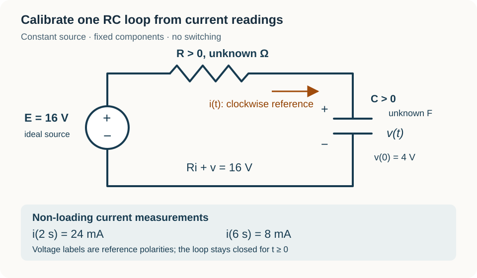

Course practice / Batch 15 / 2026-10-12 PDT
MTH 256
一阶微分方程
First-order differential equations · 阶数与线性、初值及解验证、方向场、分离变量、积分因子、牛顿冷却、指数与逻辑斯蒂增长、定容混合模型及 RC 电路
Squaring a first derivative does not make it second order
Consider \((y^{\prime})^2=4y\), with y(1) = 1, and the candidates \(u(t)=t^2\) and \(w(t)=-t^2\). Both variables are dimensionless; consider all real t.
- Identify the independent variable, dependent variable, and differential-equation order. Is the equation linear in y and its derivatives? Explain the difference between squaring a derivative and taking a second derivative.
- Differentiate u and w and check each in the differential equation for every real t. Check the initial condition separately, and state which of these two candidates solves the IVP.
- At the point (t,y) = (1,1), find every slope value permitted by the differential equation. Now check \(z(t)=(t-2)^2\) against both the equation and the same initial condition. Compare the slopes of u and z at t = 1. Does this IVP specify only one of these solution curves? No uniqueness theorem is needed.
中文提示（不含解答）
阶数看最高阶导数，而不是导数的幂次。平方相等时不要只保留正号；验证时仍需分别检查方程与初始数值。
Repeating bands in a sine-driven slope field
For \(y^{\prime}=\sin y\), both variables are dimensionless and angles are in radians. Put t on the horizontal axis and y on the vertical axis; the equation is defined for all real t and y.
- Calculate slopes at all ten points with \(t\in\{0,2\}\) and \(y\in\{-\pi/2,0,\pi/2,\pi,3\pi/2\}\), then sketch a short segment at each point. Explain why the two columns match.
- Find every constant equilibrium solution, giving a formula that includes all of them. State the slope signs on \((-\pi,0)\), \((0,\pi)\), and \((\pi,2\pi)\), and draw a vertical phase line over those intervals.
- Use the neighboring slope signs to classify y = 0 and y = π as attracting or repelling. A solution starts at y(0) = π/2: in which direction does it initially move, and which neighboring equilibrium does the phase line suggest it approaches? Find the greatest possible magnitude of any slope in this field. Do not solve the equation.
中文提示（不含解答）
先求正弦为零的位置，再看相邻区间的正负。稳定性取决于平衡值两边的箭头方向，不取决于该处斜率恰好为零。
A logarithmic drive reverses direction at one time
Solve \(y^{\prime}=\ln(t)/y\), y(1) = 2, on the stated domain t > 0 and y > 0. Both variables are dimensionless, ln is the natural logarithm, and every square root means the nonnegative real root.
- Separate variables, integrate, and use the initial condition to select an explicit solution. Find the smallest value of the expression under its square root, and use it to show that the selected branch is defined for every t > 0.
- Verify the differential equation and initial condition. Find y(e) and the slope there, exactly and to three decimals. State the intervals on which the solution decreases and increases, and find its global minimum.
- Find \(\lim_{t\to0^+}y(t)\) and \(\lim_{t\to\infty}y(t)\). Compare the first limit with y(e). Does having a finite limit at t = 0 make the original differential equation defined there? State the maximal open interval containing t = 1 allowed by the original IVP.
中文提示（不含解答）
分离后对 y 和 ln t 分别积分。检查根号内表达式的导数，可同时判断分支是否始终存在以及极小值。端点极限与方程在端点有定义是两回事。
A small starting error grows under the same forcing
For t ≥ 0, consider \(y^{\prime}-2y/(t+1)=-2/(t+1)\), y(0) = a, where a is a real constant. Both variables are dimensionless. Let \(y_a(t)\) denote the solution for the chosen a.
- Find an integrating factor, write the product-derivative equation, and solve in terms of a. Verify the differential equation and initial value. Find the constant equilibrium solution.
- Compare the solutions with a = 1 and a = 1.01. Define the signed difference as \(d(t)=y_{1.01}(t)-y_1(t)\). Find d(2) and the first time d(t) = 0.25. Explain why a small initial difference need not shrink even though both solutions have exactly the same forcing.
- The initial value can now be chosen with a small error. Find the full interval of values a for which \(|y_a(t)-1|\le0.05\) at every time \(0\le t\le9\). Explain why checking the largest time is sufficient here, and state whether any fixed a ≠ 1 stays within 0.05 of 1 for all t ≥ 0.
中文提示（不含解答）
先保留初值参数 a。比较两条解时先相减；整个时间段内的误差要求，需要找误差绝对值最大的时刻。
Cycle averages can settle while the response keeps oscillating
Solve \(y^{\prime}+y=3+2\cos t-2\sin t\), y(0) = 1, for t ≥ 0. Both variables are dimensionless, angles are in radians, and one forcing cycle has length 2π. For each integer n ≥ 0, define the average over cycle n as \(A_n=(1/(2\pi))\int_{2\pi n}^{2\pi(n+1)}y(t)\,dt\).
- Use an integrating factor to solve the IVP, then verify the equation and initial condition. Identify the repeating part and the part that decays.
- Find y(2π), exactly and to three decimals, and find y(2πn) for any integer n ≥ 0. What is the limit of these cycle-end values as n increases? Explain why that result does not mean y(t) has a constant limit as t tends to infinity.
- Find A₀, exactly and to three decimals. Check it by integrating the original differential equation over 0 ≤ t ≤ 2π and using the endpoint values. Find A_n in terms of n and its limit as n increases. Explain how cycle averages can converge even though the response continues to oscillate.
中文提示（不含解答）
积分因子可利用给出的乘积求导恒等式。整周期内正弦与余弦的积分为零；原方程积分后还要保留 y 的端点变化量。
Choose a warming rate that meets two requirements
A sample starts at 12 °C in a chamber held at 30 °C. It follows \(T^{\prime}=k(30-T)\), where the constant k > 0, in min\(^{-1}\), can be chosen by adjusting airflow. The sample must be at least 27 °C after 15 min, while its initial warming rate must be no more than 3.0 °C/min. Use T in °C, t in minutes, and this single constant-k model for all t ≥ 0.
- Solve for T(t) in terms of k and verify T(0). Explain why the sample warms and remains below 30 °C at every finite nonnegative time.
- Translate the temperature deadline and initial-rate limit into inequalities for k. Find the full interval of acceptable k values, exactly and to four decimals with units. Check that the interval is nonempty.
- Choose the smallest acceptable k. Find the first time T = 24 °C, exactly and to three decimals in minutes, and the remaining time until T = 27 °C. Find the initial warming rate for this choice, exactly and to three decimals, and check both design requirements.
中文提示（不含解答）
两个要求分别限制 k 的下界与上界。温度要求涉及指数式，初始升温速率要求可直接代入微分方程。最后用同一个 k 检验两条要求。
A growing culture uses a finite nutrient supply
A continuously modeled culture starts with 90 organisms and doubles every 5 hours while nutrient remains available. Each organism consumes nutrient at a constant rate of 0.0020 mL per organism per hour. There are initially 10.0 mL of usable nutrient, with no replenishment or evaporation. Assume exponential growth, no removals, no carrying-capacity limit, and the same consumption rate until the nutrient is exhausted. Let P(t) be population and D(t) the cumulative nutrient consumed in mL; use t in hours. Stop this model at exhaustion and do not predict later growth.
- Find the proportional growth constant r, exactly and to four decimals with units. Write and solve the IVP for P(t) while nutrient remains, and verify the doubling observation.
- Write the consumption rate D′(t), including units, and use D(0) = 0 to find D(t). Find the nutrient consumed and the nutrient remaining at t = 5 h, each to three decimals in mL. Check that the assumed growth law is still applicable at that time.
- Find the first exhaustion time tₑ, exactly and to three decimals in hours, and the population then, exactly and to two decimals. Find the instantaneous consumption rate at exhaustion, to three decimals with units. State the physical time interval on which these equations are being used and explain why dividing 10 mL by the initial consumption rate would not give the correct exhaustion time.
中文提示（不含解答）
消耗速率与当时的种群数量成正比，因此累计消耗量需要积分。先求增长曲线，再累计消耗；不要把初始消耗速率当作整个实验的恒定速率。
Population odds have their own doubling clock
A culture follows \(N^{\prime}=0.25N(1-N/800)\), N(0) = 160 organisms. Time t is in days, 0.25 has units day\(^{-1}\), and 800 organisms is the carrying capacity. Treat N as continuous and use t ≥ 0. Define the dimensionless population-to-unused-capacity ratio \(O(t)=N(t)/(800-N(t))\); use it only when 0 < N < 800.
- Find the nonnegative equilibrium populations and their slope-sign classifications. Solve the IVP by separation, verify the initial count, and show that O(t) is defined at every finite nonnegative time.
- Find O(t). Determine the elapsed time Δ required for this ratio to double from any starting time, exactly and to three decimals in days. Find N(Δ) and N(2Δ), exactly and to two decimals in organisms. Does doubling O double N?
- Find the first times N = 320 and N = 640, exactly and to three decimals in days. Compare the elapsed times for the population doublings 160 → 320 and 320 → 640 with each other and with Δ. Explain why a fixed doubling time for O does not give a fixed doubling time for N.
中文提示（不含解答）
分离变量得到的对数中正好出现 N 与剩余容量的比值。求出该比值后，恢复种群数量时仍需要解一个分式方程。
Track where the salt came from in a single tank
A tank contains 150 L of liquid and initially 6.0 kg of dissolved salt. Brine at 0.020 kg/L enters at 5.0 L/min, and perfectly mixed liquid leaves at 5.0 L/min. Assume constant rates, perfect mixing, no evaporation, and no other losses. For accounting, distinguish salt that was in the tank initially from salt that enters later; both kinds mix and leave identically, with no chemical difference. Let S(t) be total salt mass, A(t) the initial-origin salt still present, and B(t) the later-entering salt still present, all in kg. Let C(t) = S(t)/V(t) be concentration in kg/L and use t in minutes. The inlet contains none of the initial-origin salt. Continue this one-stage process until C first reaches 0.025 kg/L.
- Find V(t), write and solve the IVP for S(t), and give C(t). Find the limiting total mass and concentration if the same flow continued indefinitely. Explain why total salt mass decreases despite a positive salt inflow.
- Write separate IVPs for A and B, using A(0) = 6.0 kg and B(0) = 0. Solve them and check that A(t) + B(t) = S(t). Find the first time A = B, exactly and to three decimals in minutes, and the total salt mass then.
- Find the stopping time, exactly and to three decimals, and A, B, and S then. By integrating the appropriate outgoing rates, find how much initial-origin salt and how much later-entering salt have left by that time. Give the removed masses exactly and to three decimals, sum them, and check the overall balance using the initial salt, admitted salt, and final salt.
中文提示（不含解答）
原有盐没有流入来源，而新进入的盐有持续来源；两者的流出项都等于流量乘以各自浓度。相加后的方程应恢复总盐量方程。
Two later current readings identify both RC components
The diagram shows one closed series loop containing an ideal constant 16 V source, an unknown constant resistor R > 0 in ohms, and an unknown constant capacitor C > 0 in farads. Capacitor voltage v(t), in volts, is the upper-plate potential minus the lower-plate potential, with v(0) = 4 V. Current i(t), in amperes, is referenced clockwise into the upper plate, so \(Ri+v=16\). Non-loading measurements give i(2) = 24 mA and i(6) = 8 mA. Use t in seconds, ideal components, and the unchanged closed loop for all t ≥ 0.
- Write the IVP for v(t) in terms of R and C, and derive the corresponding current formula. Use the ratio of the two measured currents to find the time constant τ = RC. Recover i(0), then determine R and C. Give exact values and numerical values to three decimals for τ in seconds, i(0) in mA, and R in ohms, and to six decimals for C in farads.
- Write v(t) and i(t) with the fitted parameters. Verify the initial voltage and both later current readings. Find the long-term voltage and current, and state the actual current direction at every finite time.
- Find the first time the capacitor voltage is within 1.0 V of the source voltage, meaning \(|16-v(t)|\le1.0\) V. Give the time exactly and to three decimals in seconds. Find the capacitor voltage and current then, and show that the tolerance remains satisfied afterward. Compute the signed charge delivered into the upper plate up to that time by integrating i, exactly and to four decimals in coulombs, and check it against the change in \(Q_C=Cv\).

中文提示（不含解答）
两次后续电流的比值消去了未知的初始电流，可先求时间常数。再向起点回推电流，由回路方程分别确定电阻和电容。